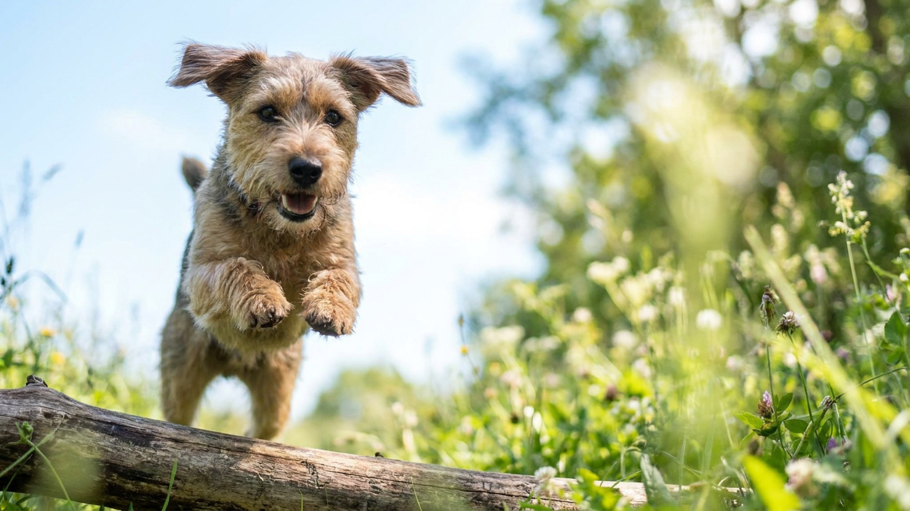

Видишь компактную белую собаку — и думаешь: «спокойная квартирная». Гладкошёрстный фокстерьер эту иллюзию разрушает в первые же дни. Это норный охотник с неутомимым двигателем, сильным инстинктом преследования и упрямством, которое требует опытной руки. Ниже — честно о том, что значит держать фокстерьера и кому это реально подходит.
🐾 У вас фокстерьер?
AnimaLife соберёт уход под породу: к каким болезням есть склонность, что проверять по возрасту, чем кормить и когда пора к врачу. Бесплатно, прямо в мессенджере.
Собрать план ухода → Собрать в MAX →
У вас iPhone? AnimaLife есть в App Store
Гладкошёрстный фокстерьер весит 7–9 кг, но энергии в нём больше, чем у многих крупных собак. Порода создавалась для работы в норе: нужно было лаять, копать, не отступать перед лисой и выносить замкнутое пространство. Эти качества никуда не делись.
Фокстерьер — не «маленькая собака для городской квартиры». Это рабочая порода в компактном корпусе.
Prey drive у фокстерьера — базовая характеристика, не дефект. Задача хозяина — не подавить инстинкт, а направить его в рабочее русло.
Упрямство — реальное. Фокстерьер решает сам, стоит ли слушаться. Дрессировка работает через мотивацию и последовательность, не через давление.
Минимум — 2 полноценные прогулки в день по 40–60 минут, не «вышел во двор». Нужны:
Фокстерьер без нагрузки становится разрушительным: грызёт мебель, роет диван, лает без остановки. Это не злой умысел — это накопившаяся энергия без выхода.
Хороший выбор для:
Не подойдёт, если:
Материал носит информационный характер и не заменяет очную консультацию ветеринара.
🐾 Ваш питомец — фокстерьер?
Заведите профиль в AnimaLife: приложение запомнит породу, возраст и вес и будет подсказывать по уходу именно для неё. Вопросы AI-ветеринару — круглосуточно и бесплатно.
Завести профиль → Завести в MAX →
У вас iPhone? AnimaLife есть в App Store
🐾 Понравился разбор?
Подпишитесь на канал — каждый день разбираем по одному тревожному симптому у кошек и собак: что в пределах нормы, а когда пора к врачу. Подпишитесь, чтобы не пропустить разбор, который может спасти здоровье вашего питомца.